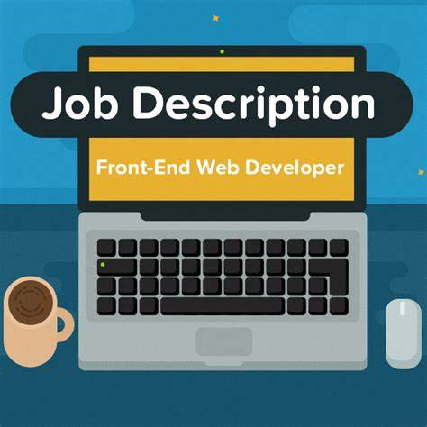

<div>
  <div class="container">
    <div class="content">
      <h3>Back-end Developer Job Description:</h3>
      <ol>
        <li>
          <h3>Server-Side Logic:</h3>
          <p>
            Develop and maintain the server-side of web applications, handling
            data storage, retrieval, and business logic implementation.
          </p>
        </li>

        <li>
          <h3>Database Management:</h3>
          <p>
            Design and optimize database schemas, write efficient queries, and
            ensure data security and integrity.
          </p>
        </li>

        <li>
          <h3>API Development:</h3>
          <p>
            Create and maintain RESTful APIs for seamless communication between
            the front-end and back-end systems.
          </p>
        </li>

        <li>
          <h3>System Integration:</h3>
          <p>
            Collaborate with front-end developers, UX/UI designers, and other
            stakeholders to integrate front-end components with back-end
            services.
          </p>
        </li>

        <li>
          <h3>Security and Scalability:</h3>
          <p>
            Implement security measures, troubleshoot issues, and design
            scalable architecture to ensure the reliability and performance of
            web applications.
          </p>
        </li>
      </ol>
    </div>
    
  </div>
</div>
